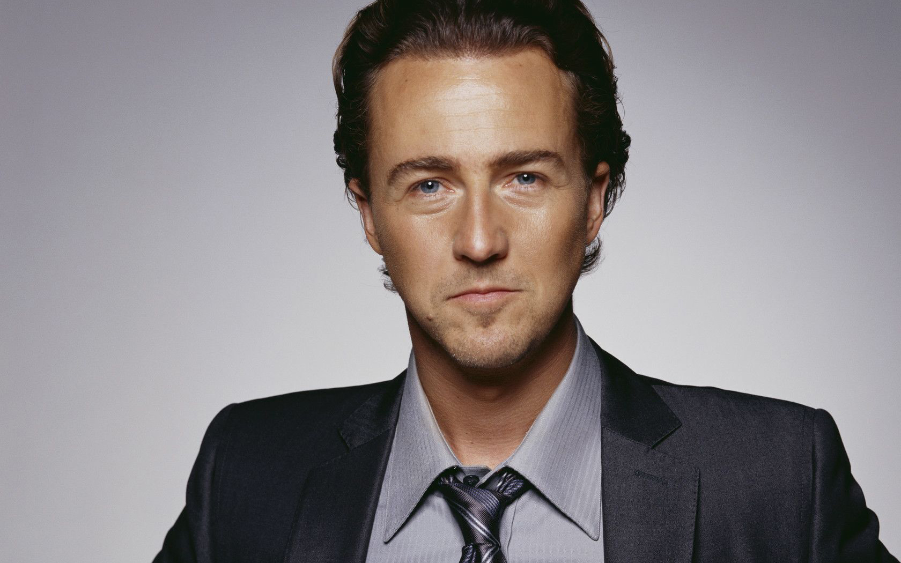
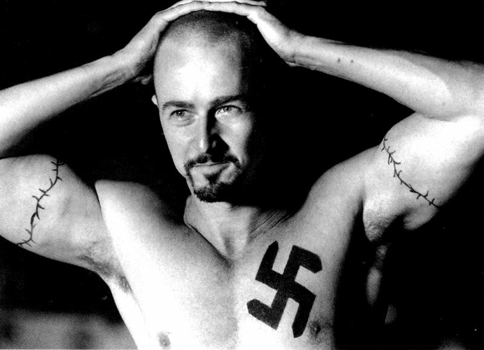

- LIFE -

Edward Norton (born August 18, 1969) is an American actor, screenwriter, film director and producer. Norton was born in Boston, Massachusetts, and raised in Columbia, Maryland. His father, Edward Mower Norton, Jr., was an environmental lawyer and conservation advocate working in Asia, as well as a former federal prosecutor in the Carter administration. His mother, Lydia Robinson "Robin" (née Rouse), an English teacher, died of a brain tumor in 1997.
- FILMO -

Edward Norton played Aaron Stampler in Primal Fear which garnered him a nomination for the Academy Award for Best Supporting Actor and the Academy Award for Best Actor for Derek Vinyard in American History X, two years later. His other performances are diverse in range and include supporting roles in the biographical drama The People vs. Larry Flynt (1996), the comedy Everyone Says I Love You (1996), and the comedy-dramas Moonrise Kingdom and The Grand Budapest Hotel, starring roles in the cult hit Fight Club (1999), 25th Hour (2002), The Illusionist (2006), Leaves of Grass (2009) (in which he acted against himself), The Italian Job (2003) and Kingdom of Heaven (2005). He also directed and co-written films, such as his directorial debut in the romantic comedy Keeping the Faith (2000). He had his uncredited work on the scripts for The Score, Frida and The Incredible Hulk.